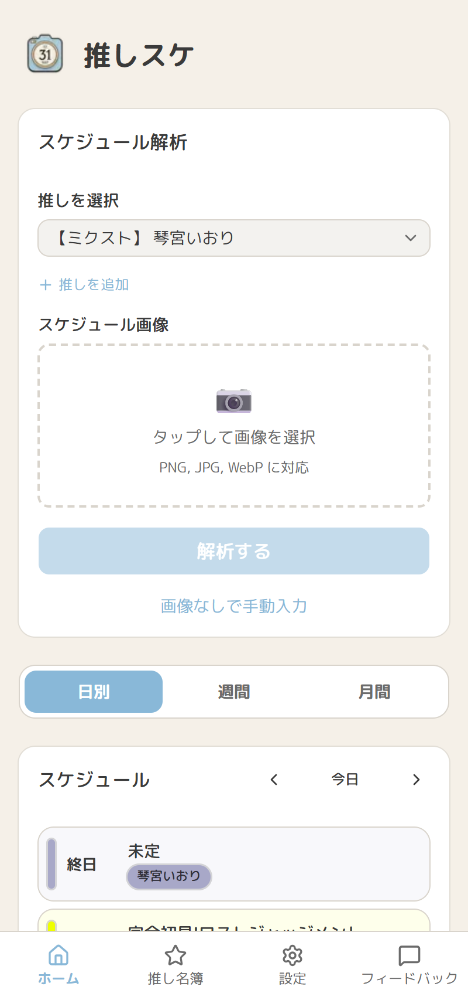
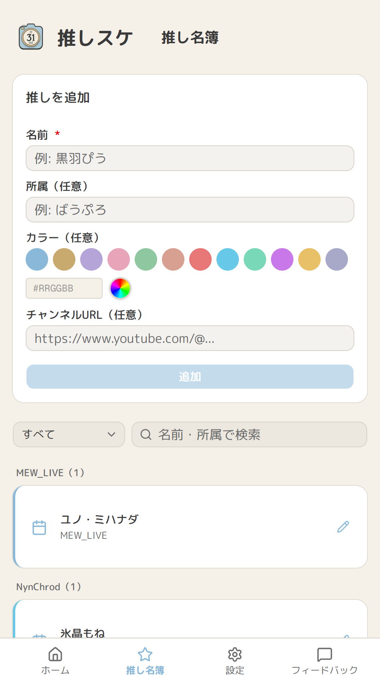
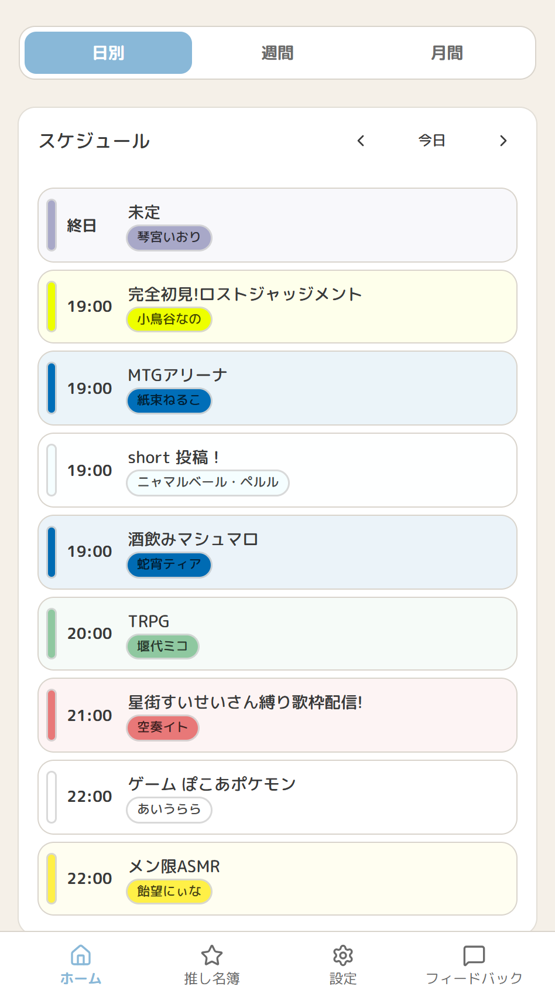
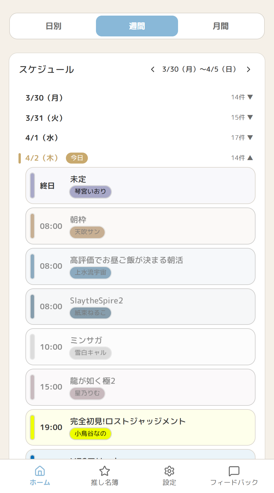
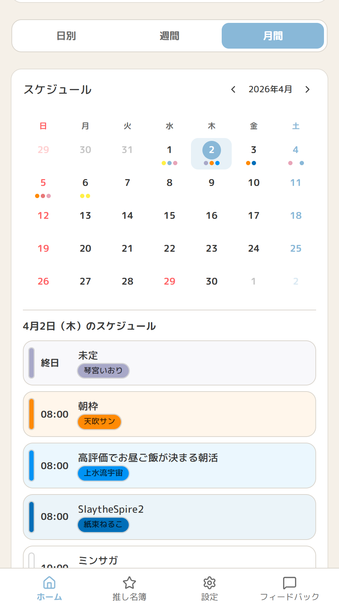
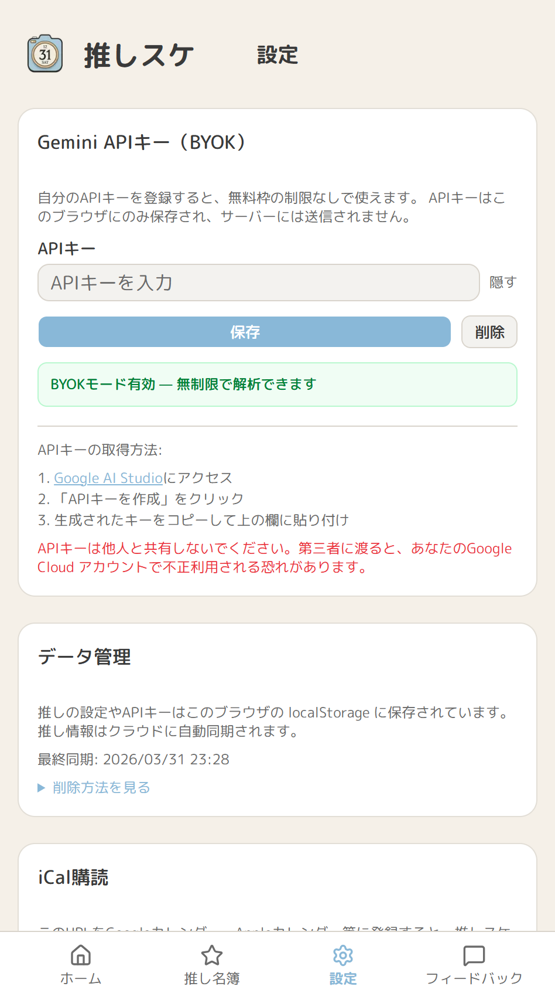

推しの配信スケジュールをひとまとめ
VTuberの配信スケジュール画像をアップロードするだけ
Gemini AIが解析して登録
日・週・月ビューで、複数の推しの予定をまとめて確認できるWebアプリ

推しのスケジュールを確認する煩雑な手間が発生していました
これだけです。 iCal形式に対応しているため、使い慣れたカレンダーアプリからそのまま購読できます。 スケジュール画像を1枚アップロードするだけで、Gemini AIが解析して購読用のカレンダーへ登録します。

推し名簿
推しを登録・管理。
グループや担当カラーも設定できる

日間ビュー
今日の配信を一覧表示。
推しごとの担当カラーで識別できる

週間ビュー
1週間の配信をまとめて確認。
当日の予定を強調表示

月間ビュー
月カレンダーから日付を選ぶと、
その日の配信スケジュールを表示

Gemini APIキーを自分で取得して登録する方式。
キーはブラウザのlocalStorageにのみ保存のため、サーバーには送信されません。
開発者側のAPIコストを抑えながらプライバシーも守れる設計。
登録したスケジュールをiCal形式で出力。
Googleカレンダー、iPhoneのカレンダー、Outlookなど、使い慣れたカレンダーアプリからそのまま購読できます。
推しの情報やAPIキーは外部サービスに個人データを預けない構成になっています。
利用は無料。ログインにはGoogleアカウントが必要になります。複数デバイス間で推しデータを同期するために使用します。
今は「画像をアップロードして解析」が起点。
最終的には、推しを登録するだけでスケジュールが届く形を目指している。
画像の取得は手動だが、解析・登録・表示は自動化されている。
推しのTwitter / YouTubeアカウントに投稿されたスケジュール画像を自動で取得し、購読者へ配信する形が理想。
ただしTwitter（X）のAPI制限の都合上、現時点では実現方法を模索中。